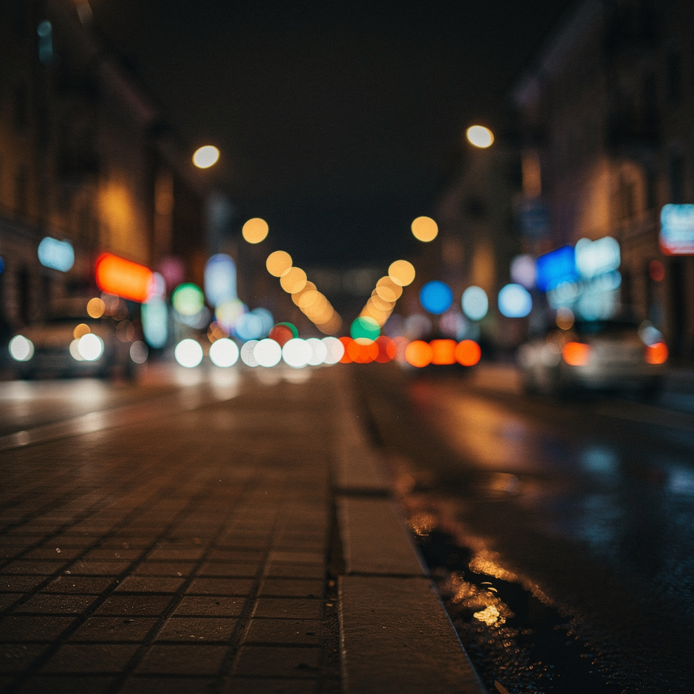

Работы
Даже на старте делаю вещи, которые выглядят дорого и несут смысл.

Художественно-философский роман, открывающий цикл «Эфир». Работа над миром, персонажами, визуальным языком и типографикой издания.

Продолжение. Углубление тем сознания, технологий и будущего. Сильный акцент на атмосферу и внутренние конфликты героев.

Завершение основной трилогии. Кульминация и новые вопросы. Параллельно работа над визуальным стилем всей серии.

Параллельная история. Другой ракурс на тот же мир. Эксперимент с формой и повествованием.
Многонаправленный сайт-платформа. Пересечение сайтов, дизайна, исследований и литературы. Эстетика, глубина и многогранность в одном месте.

AI-инструменты, прототипы интерфейсов и нестандартные цифровые продукты. Место для быстрых экспериментов и будущих публичных релизов.